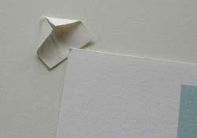

Matting and Framing Crash Course
Page 6, Version 5.2, ©2002-2005 by Dale Cotton, all rights reserved.
Mat/Print Assembly
We now have three important components: the backboard, the print, and the over-mat. The next step is to turn them into a unit. Put the over-mat on top of the backboard, line them up squarely, then use small pieces of tape to hinge them together at the top. Now slip the print into this sandwich and move it about until it is square and centered. With a pencil handy, hold the print in place while lifting away the over-mat. Use the pencil to outline the corners of the print on the backboard. Now you need to attach the print to the backboard in some fashion.
There are five ways of attaching the print to the backboard I know of. Here are the pros and cons:
- Tape. Two problems: if the print is a matte-surface paper, tape can damage the print either by affecting longevity or by tearing the paper when removed. There are special framing tapes that have neither problem, but I haven't found one that doesn't leave adhesive on the print when removed. When you have an extremely large print on a fairly flimsy paper, tape may be the only solution. In which case, apply pieces of tape vertically to the back of the print, then apply pieces of tape across the ends of the tape already on the print, forming a tape T. This minimizes possible damage from the tape on the print.
- Adhesive tabs (small pieces of double-sided tape). The Henzo tabs illustrated in Fig. 2 are reputedly archival but will also tear or leave adhesive behind. They are also not strong enough to support prints larger than about 13" x 19".
- Photo Mount spray. If I spray only one surface - the back of the print OR the backboard - I find I can later detach the print from the back mat with no problem. My procedure is to 1. mark the corners of where the print will go on the backboard. 2. Spray the back of the print outdoors on newspaper following directions on the can. 3. Lightly lay the print in place on the backboard. 4. Cover the print with another sheet of paper or cardboard. 5. Use a squeegee or roller on the covering sheet to press the print on to the backboard.
- Dry mounting. This involves a heat press plus a thin sheet of adhesive. I have no personal experience with this solution.
- Mounting corners. Inexpensive, archival, and allows easy removal of the print. Only down side is that large thin prints will sag when only supported at the corners. I have this problem even with 13" x 19" prints, depending on the stiffness of the paper stock.
{kind=link}
If you haven't been able to locate one of these products, not a problem. Here's how to make your own mounting corners. Take a half-inch square of paper, fold the top right corner to the vertical centre-line, then do the same with the top left corner:

Fig. 12: Hand-made mounting corner
Now put the print back in position according to your pencil marks, then simply slip the mounting corner over each corner of the print and tape the mounting corner to the backboard. The print is easily removable and remains unharmed.
Fig. 13: Using a mounting corner
Frame Assembly
I buy the modular metal and glass frames that are so common for photography. There are persistent claims that wood frames emit fumes that will eventually spoil a photograph. That may be, but I don't have the ego to worry about my prints lasting for centuries. I just like the price and aesthetics of the metal frames (they're still pricey – nothing cheap about art supplies!).
Now you need to clean the frame, glass, overmat, and everything else involved. At this point I don white cotton gloves (a funeral home memento) to make handling the glass safer and avoid finger prints on the print. Philip Greenspun narrates an anecdote about a ritzy framing shop in New York City that prides themselves on having a NASA or Intel level clean room. The issue here is that as soon as you get your print embedded in the frame and totally ready for hanging you will notice at least one speck of paper lint clinging to the glass ... on the inside. It will drive you crazy. As well as Windexing the glass, wipe the print, the over-mat, the backboard, the frame's inner surface, etc. with a soft cloth. Maybe use a blower too. Be fanatical. Do it in another room to leave the lint and dust behind, then rush back into your workroom before the lint can re-settle! (Just kidding!)
Note: from Ken Schuster, March 31, 2001: Have you tried an anti-static cloth (Ilford makes a good one) on the inside of your frame glass?
Dale responds: Doh!
Another tip: North Americans use a spray on ammonial solution called Windex and paper towels to clean glass. To avoid much of the paper lint nightmare, don't use paper towels – use a cloth dish towel.
Getting close to the wire. Check the mat+print sandwich again for motes; also the glass. Slip the mat+print sandwich into the frame, add the cheap piece of cardboard that came with the frame if needed for thickness. You want the print/mat to snug up as tight as possible to the glass. Turn the frame over, tap it, and check closely for specks. Repeat the above until you've gotten rid of all specks.
Metal frames come with spring clips for the four corners. Wooden frames need brads or nails to bind the inserts to the frame. (Some framers seal the entire back of a wooden frame with brown butcher's paper; not sure why but it looks professional.) Add the hanging wire (with a fair amount of slack) and you're done.
Finally, hold your breath, turn the frame over while praying you don't find a new speck inside, shaken loose from some hiding place.
To hang the framed photo, I use a drill, two plugs, and two screws:
Fig. 1: Framed print
I put the plug and screw pairs about eight inches apart. Not only do two screws handle a greater weight load, they also make it considerably easier to hang the framed picture level.